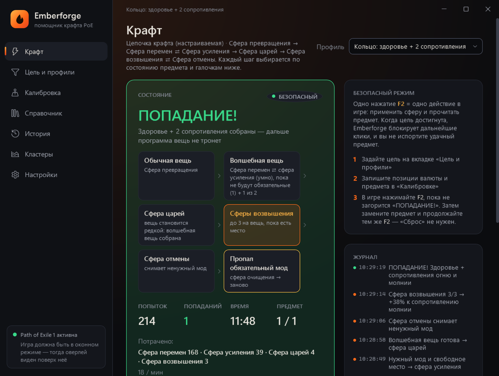

Автокрафт и помощник крафта для Path of Exile 1 и 2
Задайте нужные моды — Emberforge сам решит, какую сферу применить, и остановится на попадании. Бесплатно, на русском и английском.
Скачать бесплатноWindows 10/11 · обновляется сама · или один файл без установки

Что умеет
Цепочки крафта
Сфера превращения → сфера перемен ⇄ сфера усиления → сфера царей → сфера возвышения ⇄ сфера отмены. Реакции на ненужный мод и лимиты на каждую сферу.
Крафт кластеров
Цены всех сочетаний пассивок кластерного самоцвета с официального трейда и один профиль на все выгодные сочетания.
Роллинг карт T17
Количество предметов, больше валюты, размер групп и запрещённые моды — для карт и путевых камней, пачкой.
6 гнёзд и 6-линк
Сфера златокузнеца до нужного числа гнёзд, потом сфера соединения до 6 связей. Можно только гнёзда или только связи.
PoE 2
Подсказки предзнаменований левши и правши, сущности вместо сферы царей, база модов PoE 2 с русскими названиями.
Безопасный режим
Одно ваше нажатие — одно действие в игре, как требует GGG. Не читает память игры и не внедряется в процесс.
Частые вопросы
Emberforge бесплатный?
Да. Скачать и пользоваться можно бесплатно, без регистрации и подписки.
Это бот? За автокрафт банят?
В безопасном режиме (по умолчанию) программа ничего не нажимает сама: одно ваше нажатие — одно действие в игре. Авто-режим нарушает правила игры и может привести к бану, поэтому он выключен и включается только после явного согласия с риском.
Поддерживается Path of Exile 2?
Да: путевые камни, цепочки крафта, сущности и подсказки предзнаменований.